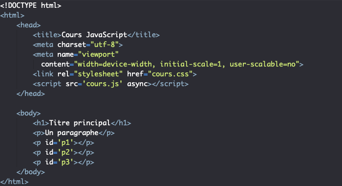

LES 10 PRINCIPAUX LANGAGES FRONT-END
Selon une enquête de WP Engine, le HTML est le langage frontend le plus facile à ajouter aux compétences d’un développeur. Cependant, si vous êtes un débutant, un développeur ou une entreprise, vous devriez voir ces 10 principaux langages frontend avec leurs caractéristiques.
REACT
React est un langage frontend qui fonctionne au sein de JS pour améliorer les fonctionnalités d’utilisation.
Il s’agit d’une bibliothèque open-source qui a été initialement publiée en 2013.
Il a été développé par Facebook il y a environ 8 ans et est maintenant utilisé pour les principales applications web telles que
Facebook, Instagram, WhatsApp, Yahoo ! Etc.
Fonctionnalités principales
Accepte facilement JSX – React possède de nombreuses fonctionnalités intégrées qui fournissent une base pour ce qui est accepté comme texte.
Il accepte volontiers JSX et prend également en charge les citations HTML.
Cela peut faciliter l’apprentissage d’un nouveau développeur.
Débogage facile – Cela signifie qu’en tant que framework ou bibliothèque, il doit disposer des outils appropriés pour travailler de manière efficace et efficiente.
L’une des principales caractéristiques de React est la facilité de débogage. Sa simplicité ne laisse pas beaucoup de place à l’erreur,
et le débogage peut être effectué avant l’exécution du code.
Soutien au référencement – React est favorable au référencement et peut facilement apparaître lors d’une charge importante.
Ce support SEO lui confère un avantage majeur pour les applications à forte charge en termes d’optimisation des moteurs de recherche.
JavaScript

JavaScript est présent sur le marché depuis bien plus longtemps. Il s’agit de l’un des mécanismes les plus couramment utilisés pour le développement frontend, aux côtés de HTML et CSS.
Il s’agit d’un langage simple, facile à comprendre, à apprendre et à mettre en œuvre. Il est supporté par beaucoup d’autres langages de backend.
Fonctionnalités principales
Architecture côté client – Elle utilise un modèle « côté client », ce qui signifie qu’elle réduit la charge sur le serveur et est très rapide
en fonction des ressources du client.
Conception riche en fonctionnalités – Elle peut être utilisée pour créer des interfaces très intrigantes et attrayantes. Il prend en charge plusieurs bibliothèques externes,
ce qui ajoute à ses fonctionnalités.
Prise en charge d’un large éventail de langues – Elle prend en charge le langage HTML et peut facilement être utilisé en cascade pour gérer le contenu. De plus, il peut être programmé pour
récupérer des données à partir de sources ou de moyens multiples.
